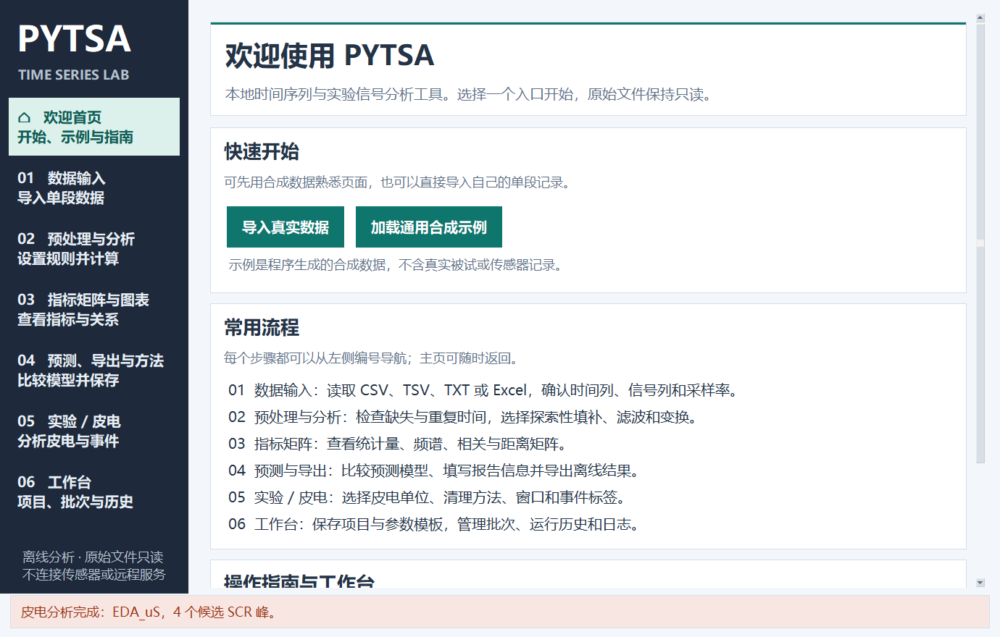
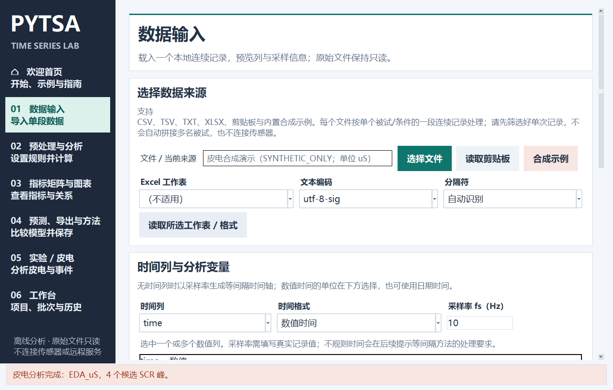
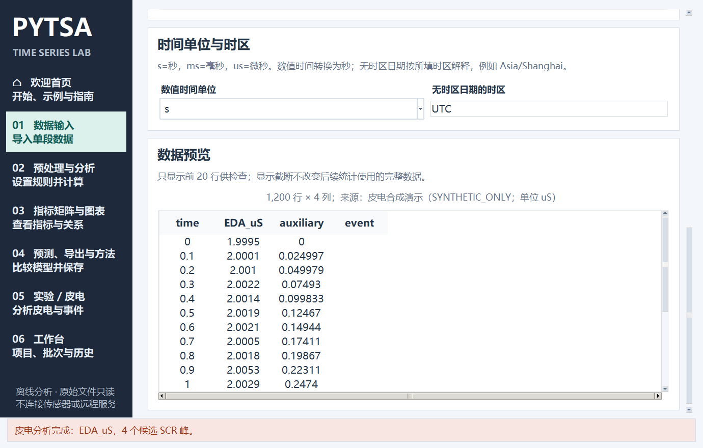
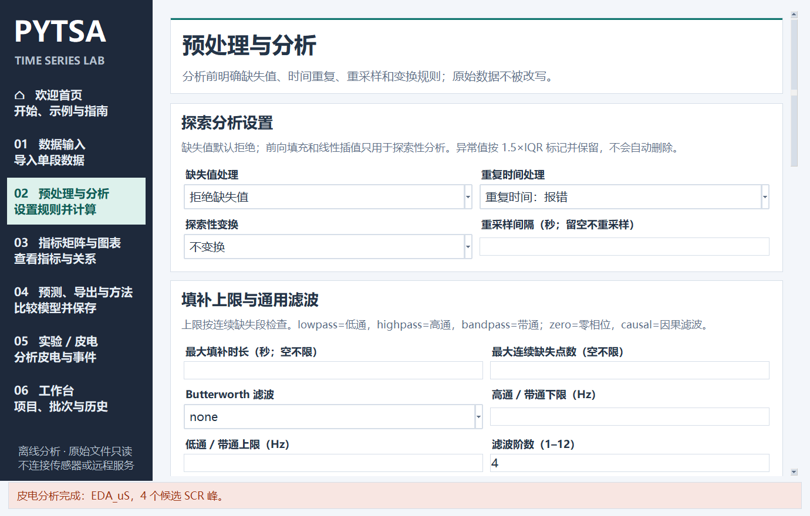
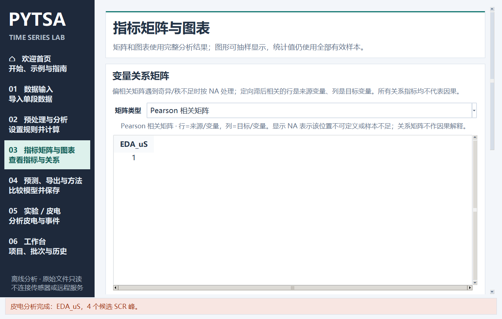
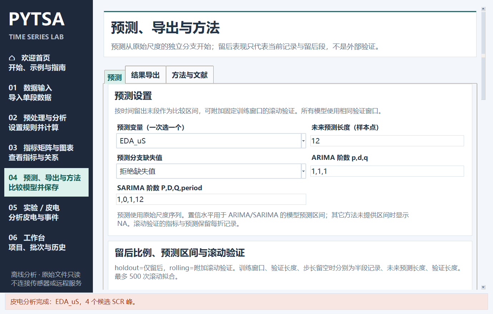
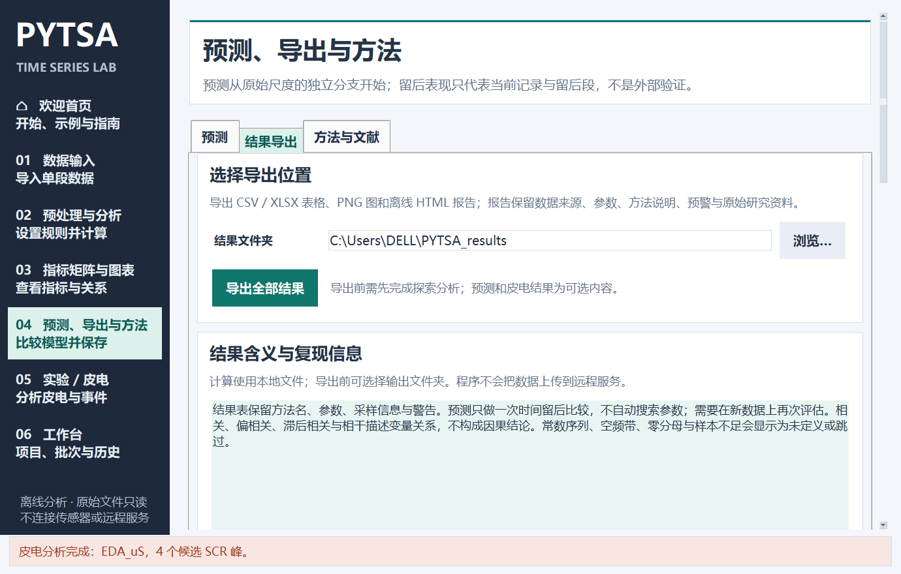
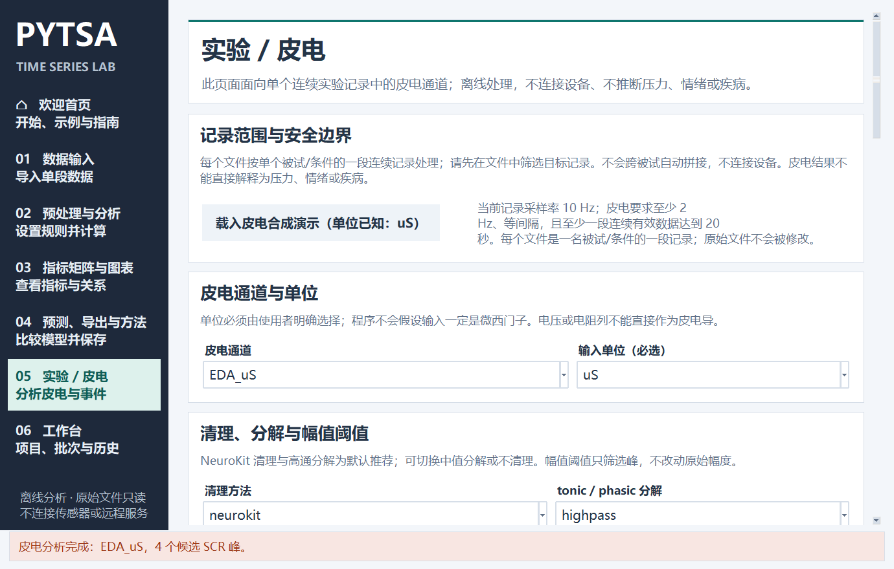
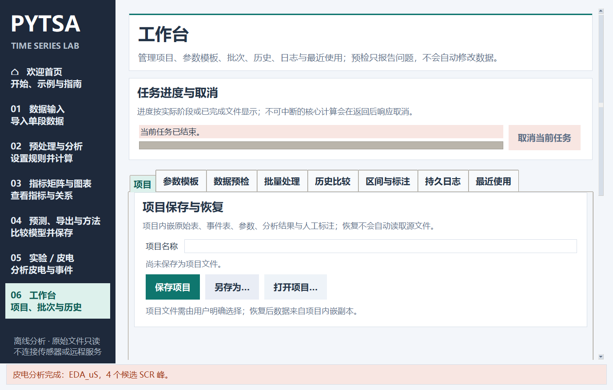

PYTSA 操作指南
适用于 PYTSA 1.3.1 · 中文界面截图取自桌面程序
PYTSA 在本机读取表格并运行分析，原始输入文件保持只读。每个文件按一个被试或条件的一段连续记录处理；程序不会拼接多个被试，也不会连接采集设备。
快速演示
- 启动程序后，加载画面完成初始化会进入欢迎首页。
- 点击 加载通用合成示例。程序会载入标记为
SYNTHETIC_ONLY的数据并打开数据预览。 - 进入 02 预处理与分析，保留默认设置并点击 准备数据并分析。
- 查看 03 指标矩阵与图表 和 04 预测、导出与方法。练习皮电时，在 05 实验 / 皮电 使用皮电合成演示。
- 点击左侧 欢迎首页 可随时返回。




通用时间序列示例与皮电示例是两组不同的程序合成数据，不是真实被试、实验或传感器记录，不能用于实证结论。导入新文件会替换当前记录和派生结果。
导入真实数据、设置时间与采样率
在 01 数据输入 点击 选择文件，选择 CSV、TSV、TXT 或 XLSX。文本读取失败时检查“文本编码”和“分隔符”；Excel 可选择工作表，再点击 读取所选工作表 / 格式。也可以读取剪贴板中的表格文本。
载入后选择时间列和一个或多个数值信号列。没有时间列时，程序会按采样率生成等间隔时间轴。填写真实的 采样率 fs（Hz）；不确定时先查设备或文件说明，不要用记录行数代替采样率。
数值时间可选秒 s、毫秒 ms 或微秒 us；日期时间可在“时间单位与时区”检查时区。无时区日期按指定时区解释，有时区值转换到 UTC。遇到重复或不存在的夏令时本地时刻，应使用带偏移的时间明确表示。请核对预览列名、首尾时间和单位。


预处理与分析
- 缺失值处理：默认拒绝。前向填充和线性插值只用于探索性分析；可设置缺失时长和连续缺失点数上限。
- 重复时间处理：可报错、取均值或保留首条，按数据含义选择。
- 重采样间隔：仅在目标间隔已明确、需要整理为等间隔时间轴时填写，单位为秒。
- 探索性变换与滤波：可选去趋势、Hampel 去尖峰、中值或 Savitzky–Golay 平滑、陷波、小波软阈值和 Butterworth 滤波，默认关闭；这些操作改变探索分支，预测仍使用保留的原始尺度分支。
- 指标参数：ACF/PACF 滞后、周期、Welch 分段长度和频带范围要与采样率、记录长度相容。
点击 准备数据并分析。结果含描述统计、平稳性和残差检验、异常值标记及结构图。异常值只被标记，不会自动删除。遇到错误时先阅读弹出的原因和页面状态。


指标矩阵与图表
完成分析后进入 03 指标矩阵与图表，选择 Pearson、Spearman、Kendall τ、协方差、偏相关、指定滞后相关、频带平均平方相干或标准化欧式距离。Kendall 矩阵描述秩相关，不计算显著性 p 值。图表标签可切换时域、ACF/PACF、Welch PSD 与 STL 分解。
矩阵描述当前变量的统计关系；滞后相关方向按界面说明读取，相关、偏相关和相干本身都不代表因果。样本不足、常数序列或空频带可能显示 NA 或提示。


预测与导出报告
在 04 预测、导出与方法 的“预测”标签选择预测变量、未来长度、留后比例和模型。可以先用简单模型建立基线，再按记录长度选择 ETS、ARIMA 或 SARIMA；季节周期按样本点填写。留后表现只代表当前记录中的时间留后段，不等同于独立外部验证。
预测完成后切换到“结果导出”：选择结果文件夹、报告模板和标题，填写实验信息，勾选报告章节与格式，按需选择图表，再点 导出全部结果。等状态栏提示完成后，打开生成的时间戳目录。
输出格式可选 CSV、XLSX、JSON、PNG 和离线 HTML。HTML 图表嵌入报告；选择 CSV/XLSX 时才会额外输出相应数据表。报告模板可保存并复用。




实验与皮电
进入 05 实验 / 皮电，可以使用当前已载入记录，也可点击 载入皮电合成演示（单位已知：uS） 熟悉设置。选择皮电数值列和单位，并确认采样率；要求至少 2 Hz、等间隔，且至少有一段连续有效数据达到 20 秒。
按研究设计选择清理与分解方法、检测阈值、固定窗口长度和统计区间。事件表为可选项，时间以记录起点开始的秒数表示；也可以从原始连续标签列提取事件。运行后检查原始、清理、tonic/phasic 曲线和结果表。皮电分析不直接推断压力、情绪或疾病。


配置与环境
在 07 配置与环境 导入或导出完整参数、设置运行后端和 CPU 并行数，并检测可选依赖。配置包含预处理、分析、预测、皮电、事件映射和运行资源设置，不包含数据文件；导入后核对列名、采样率、单位和事件时间。
cpu使用 CPU；auto在 GPU 可用时尝试使用，否则记录原因并回到 CPU；gpu要求功能检测通过。GPU 当前只加速 Pearson、协方差和标准化距离矩阵。- “检测环境”会尝试导入依赖并运行 CuPy 运算。安装 Python 包不会安装 NVIDIA 硬件或驱动。GPU 需要兼容的显卡、驱动和 CuPy 版本。
- “一键安装缺少包”需要网络。便携 EXE 的可选组件使用独立环境，安装后需重启并重新检测。cvxEDA 需要可选依赖
cvxopt；BioSPPy 清理要求采样率高于 10 Hz。 - SparseEDA 是实验性方法，可能失败。NeuroKit 的 cvxEDA 接口不公开求解器收敛状态，有限输出不能单独证明优化已收敛。
CPU 是默认计算路径。GPU 加速目前仅用于 Pearson、协方差和标准化距离矩阵；其它检验、预测和皮电求解仍使用 CPU。并行线程数为 1–32，实际速度取决于数据大小和计算类型。
工作台、项目、模板、批次与历史
- 项目：首次用“另存为…”创建
.pytsa.json文件，之后保存当前项目。项目嵌入当前表格、参数和可用结果；打开项目不会自动重读原始路径。源文件移动后，重新选择新路径、载入、分析并保存。 - 参数模板：保存预处理、分析、预测、皮电和事件设置。应用模板只更新界面，不会自动运行；列名不匹配时按提示映射。
- 批量处理：添加一个或多个文件，明确选择事件文件策略；程序不会按文件名自动配对事件表。按需选择输出目录，完成项和失败项分开记录。
- 历史比较：成功运行后会保存快照。可比较两次运行的参数、指标与兼容曲线；只有定义和单位相容时才计算差值或叠加。
- 其他标签：最近使用、日志、区间与标注用于查找本机记录和排查任务。人工标注只记录区间，不自动改变样本。


常见问题
启动后看不到主窗口？
程序先显示加载画面，初始化后进入欢迎首页。若窗口初始化失败，会显示异常类型和实际错误内容。记录完整错误文本，再检查运行环境或资源文件。
时间或频谱结果看起来不合理？
核对时间列、数值时间单位、时区和 fs。填写采样率不能修正不规则采样；频率分析依赖正确的采样信息。
为什么预测、矩阵或导出提示先完成分析？
这些功能需要载入当前数据并完成预处理与分析。皮电还要求选择有效通道、单位和采样设置。
项目提示源文件 changed 或 missing？
项目中嵌入的表格和保存结果仍可恢复。要改用新路径时重新选择文件；程序不会自动寻找或替换源文件。
HTML 里没有表格下载链接？
表格下载链接依赖导出时选择 CSV 或 XLSX。只选 HTML 时图表会嵌入报告，但不会额外生成完整表格文件。
本机模板和历史保存在哪里？
Windows 默认工作区是 %LOCALAPPDATA%\PYTSA；设置 PYTSA_HOME 可指定独立位置。模板、历史、日志和批次记录都保存在本机。